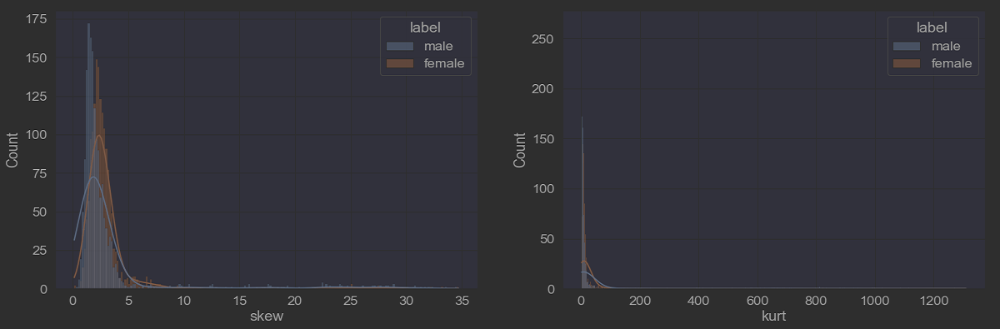
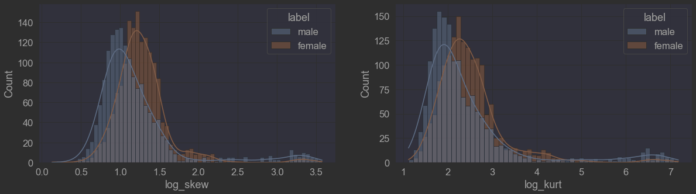
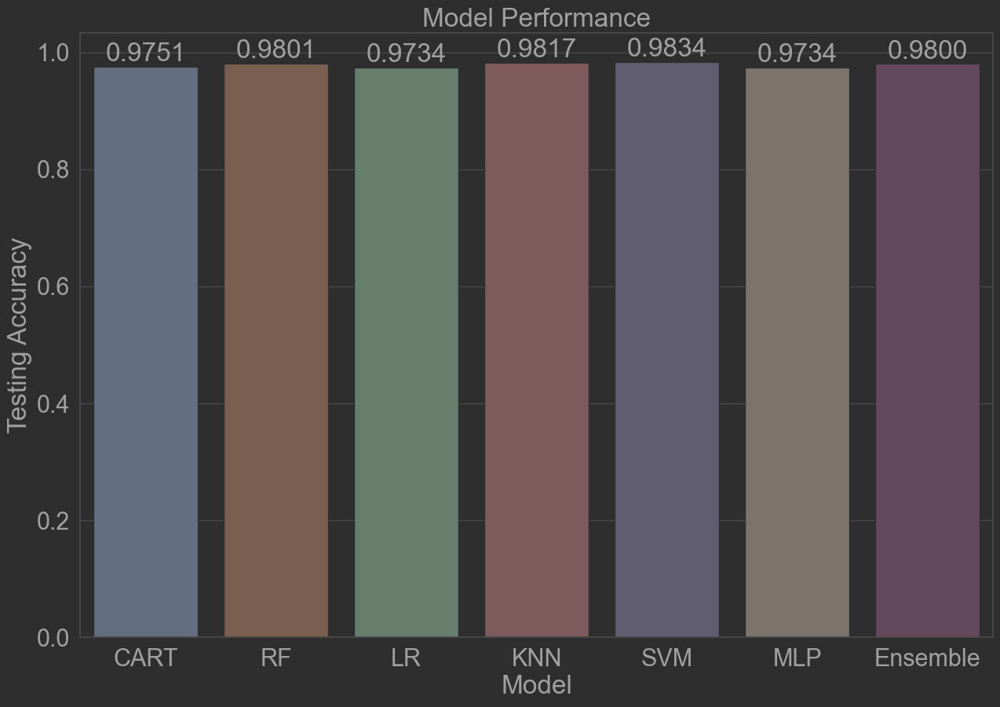

Welcome to our project for the NTU course SC1015 Introduction to Data Science and Artificial Intelligence!
In this project, we explore the relationship between sound data and the gender of the speaker, and develop models to estimate the gender of a speaker based on various features.
All code is located under the src directory.
Please read through the code in the flowing sequence:
DataPreparationAndExploration.ipynb
GenderRecognitionUsingTreeBasedAlgorithms.ipynb
GenderRecognitionUsingNumericalAlgorithms.ipynb
SVMFurtherExploration.ipynb
PCAFurtherExploration.ipynb
EnsembleVoteModelExploration.ipynb

How can we classify the gender of a speaker through their voice?
The features
meanfreq(mean frequency) and
centroid(frequency centroid) were found to be identical in definition, so we removed the
duplicate data to avoid redundancy and potential confusion in the analysis.
To prepare the input data, we performed data correction by applying a log transformation. This helped to mitigate the impact of extreme values and normalize the distribution of the data. The log transformation effectively reduced skewness, brought the data closer to a normal distribution, and improved the accuracy of our model by mitigating the influence of outliers. Overall, this data correction technique proved to be an effective way to preprocess the input data and enhance the performance of our model.


The purpose of normalization is to ensure that all features are treated equally in terms of their scale. After applying normalization, we saw a remarkable increase in accuracy of our SVM model from 0.6934 to 0.9834.
When dealing with datasets with a large number of predictors, it can be challenging to perform outlier removal on each specific predictor. Therefore, we utilized the Isolation Forest algorithm to identify and remove outliers from the input data.
| Model | Training Accuracy | Testing Accuracy |
|---|---|---|
| Classification Tree | 1.0000 | 0.9751 |
| Random Forest | 1.0000 | 0.9801 |
| Logistic Regression | 0.9763 | 0.9734 |
| K-Nearest Neighbors | 1.0000 | 0.9817 |
| Support Vector Machine | 0.9896 | 0.9834 |
| Multi-Layer Perceptron | 1.0000 | 0.9734 |
| Ensemble Vote | 1.0000 | 0.9800 |

Previously, we employed a conventional train-test split to evaluate the performance of our gender classification model. In order to further improve the accuracy and efficiency of our algorithm, we utilized CV to evaluate the model’s generalization performance and reduce overfitting.
We conducted an in-depth analysis of SVM by exploring and adjusting its parameters to achieve optimal performance. To explicitly refine our understanding of each parameter, we plotted the separating hyperplane for different parameter and kernel. This process allowed us to fine-tune the SVM algorithm and gain a better understanding of its behavior.
We aimed to improve efficiency by compressing the predictor data using PCA. Through our exploration of compressing the data to varying dimensions and assessing the resulting accuracy, we gained a deeper understanding of the application of PCA. Our findings demonstrate that by compressing the data to a certain degree, we can achieve a good balance between accuracy and efficiency, leading to better performance in our predictive modeling.
We developed an Ensemble Vote model that integrated the outputs of multiple high-performing models, including Random Forest (RF), Support Vector Machine (SVM), Multi-Layer Perceptron (MLP),and selected the majority vote to improve our prediction results. However, the accuracy of the Ensemble Vote model did not meet our expectations. This experience taught us the importance of carefully selecting and combining models based on their individual strengths and weaknesses, and considering the underlying assumptions and limitations of each model. We also learned the significance of interpreting the results and understanding the reasoning behind the outputs, rather than blindly relying on a model’s prediction.
What are the key features to classify the gender of a speaker through their voice?
According to classification tree analysis,
IQRandmeanfunhave been identified as the two main predictors for differentiating male and female voices. A higherIQRand lowermeanfunare more indicative of a male speaker.
Which models can predict the gender of a speaker with higher accuracy?
Among the various models, the SVM model with an RBF kernel achieved the highest accuracy, with a score of 0.9834.
| Name | GitHub Account | Contribution | |
|---|---|---|---|
| Pu Fanyi | pufanyi | FPU001@e.ntu.edu.sg | Further Exploration, presentation |
| Jiang Jinyi | Jinyi087 | D220006@e.ntu.edu.sg | Machine Learning, slides & script |
| Shan Yi | shanyi26 | SH0005YI@e.ntu.edu.sg | Data Preparation and Exploration, slides & script |
Various resources were used to help us gain a better understanding of the project and the various machine learning methods.
specan)
scikit-learndocumentation
pandasdocumentation
pandasfunctions.